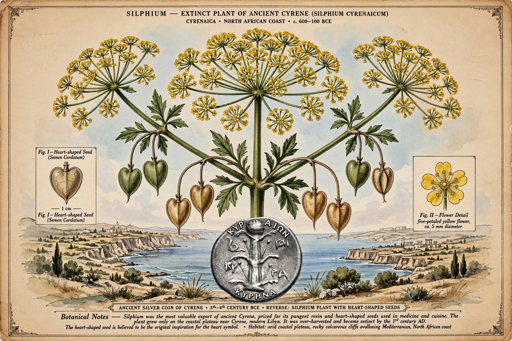

Silphium, also known as silphion, laserwort, or laser, is an unidentified plant that was used in classical antiquity as a seasoning, perfume, aphrodisiac, and medicine, and as a contraceptive. It was the essential item of trade from the ancient North African city of Cyrene, and was so critical to the Cyrenian economy that most of their coins bore a picture of the plant.

The plant grew only in a narrow coastal strip near Cyrene in modern Libya. Despite attempts to cultivate it elsewhere it resisted domestication. It was reported extinct by the 1st-2nd century AD; the last stalk was said to have been given to Emperor Nero. Overharvesting, overgrazing and climate change are proposed causes — often cited as an early example of human-caused extinction.
Scholars generally place it in the carrot family (Apiaceae), possibly a species of Ferula (giant fennel). In 2022-2023, Turkish researcher Mahmut Miski proposed Ferula drudeana as a candidate, though this remains debated.
Its resin (laser) flavoured Roman cuisine, its juice was used medicinally for coughs, fevers and digestive complaints, and ancient sources describe contraceptive and abortifacient use.
The heart shape (♥) has popularly been linked to the shape of silphium seeds, though this is speculative.